About Kodaikanal
Kodaikanal - Princess Of Hill Stations
They say “the best things in the world are free," and you begin to realize or believe it as soon as you set foot in Kodaikanal. The satisfying, woody, and sharp scent of pine blowing in the air, dewdrops on rose petals, trees stretching their limbs in the morning sun, and the Kurinji flowers turning the upper hills of Kodai purplish-blue—all of these things often leave people at a loss for words, and that’s when the real magic begins. The entire town is made of tiny tourist spots that make it a paradise, and I’m not sure whether this list of places to visit in Kodaikanal can do justice to its old-world charm, but let’s give it a shot!
Popular Places In Kodaikanal
Looking for the finest Kodaikanal tourist places for your next escapade? Here is a list of some of the most amazing places to visit in Kodaikanal for a fun and memorable vacation with your friends and family.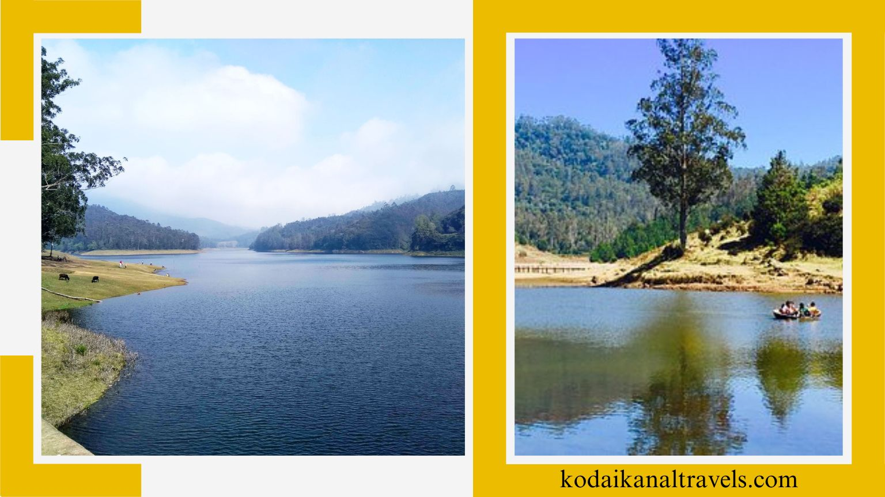
BERIJAM LAKE
Berijam Lake, a reservoir located amid non-native trees and vast grassland, is just a few kilometers from Kodaikanal, which makes it one of the best places to see in Kodaikanal. The lush greenery and refreshing setting of the lake make it a wonderful picnic spot. Since the lake is connected by motorable roads, it is not a difficult task to reach here. However, tourists need a forest pass to enter the area. Those interested in fishing will have to get permission from the Fisheries Department. Apart from this, tourists can also go for a scenic boat ride.
MANNAVANUR LAKE
One of the most serene places to visit in Kodaikanal, Mannavanur Lake is nothing less than a paradise. The drive to the lake is absolutely scenic, as the road on both sides is lined with eucalyptus and pine trees. The Mannavanur area is blessed with a rich fauna. One can see exotic birds flying and spot wild animals. The lake is located inside a sheep farm, where one can see flocks of sheep grazing. The Forest Department of the area offers coracle rides at a nominal fee; one can also go horseback riding. Try these things to do in Kodaikanal for a great vacation.
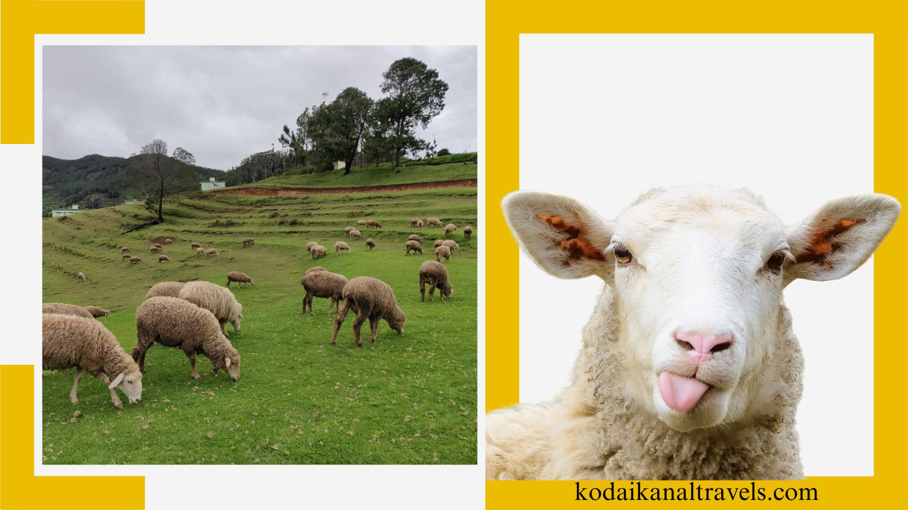
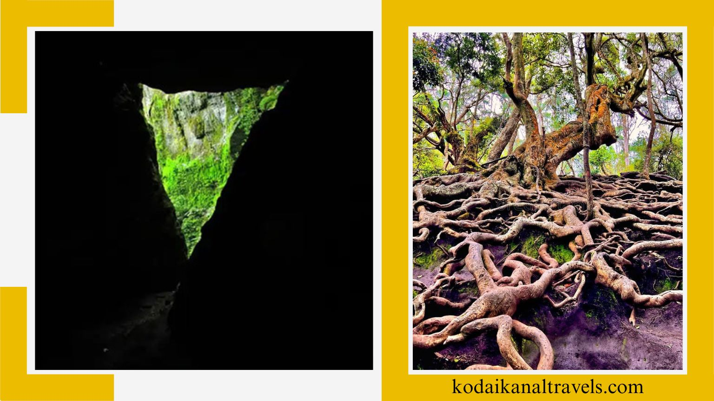
GUNA CAVES
Located at a distance of 12 km from Kodaikanal, Guna Cave remained unknown for many years, but then came the Kamal Hassan starr movie “Guna” in 1991, which changed the fate of this cave. The cave was discovered by an English officer named BS Ward in 1821 CE. If you’re interested in exploring the hidden wonders in the pine trees of Kodaikanal, you must explore this cave. The list of Kodaikanal tourist places is not complete without Guna Cave.Some of the best are hiking, camping, and more, which are must-tries for all adventure enthusiasts.
ASTROPHYSICAL OBSERVATORY
One of the oldest observatories in the world, the Astrophysical Observatory is perfect for Kodaikanal sightseeing. Located in the rolling hills of Palani, it was established in 1899. The observatory has a 20-cm refractor, which is sometimes used for cometary and occultation observations and is sometimes made available to visitors for night sky viewing. It also has an astronomy museum displaying models and pictures. This observatory deserves to be on the list of places to visit in Kodaikanal.
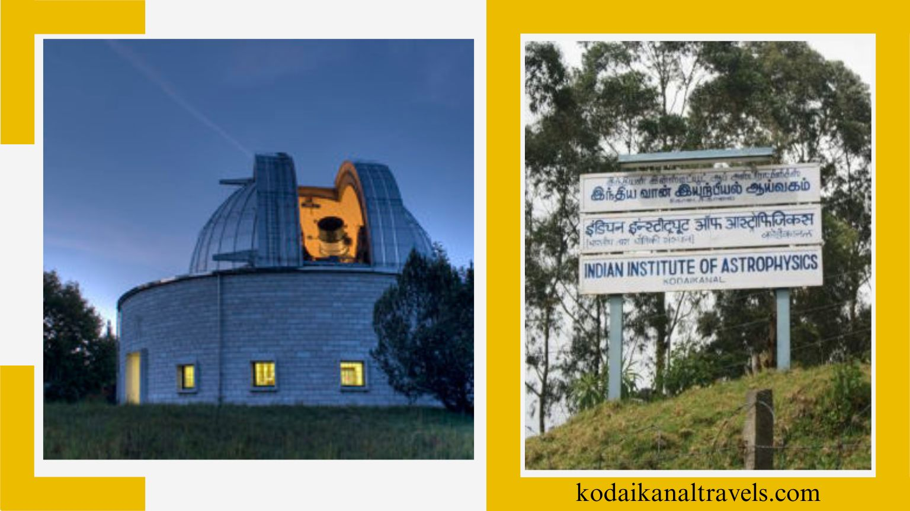
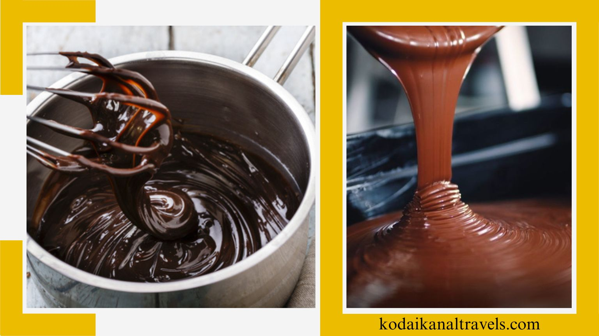
KODAI CHOCOLATE FACTORY
Started in 1999, Kodai Chocolate Factory is a leading manufacturer and supplier of chocolates, aromatic oils, coffees, etc. They specialize in making delicious homemade chocolates, and their products are 100% vegetarian. If you are a die-hard chocolate fan, it is among the must-visit places to see in Kodaikanal for you. Do pay a visit to Pot Luck, Cloud Street, Chocolate Factory, and SG Cottage Industries to buy and try different varieties of chocolate.
KURINJI ANDAVAR MURUGAN TEMPLE
Whether you’re religious or not, Kurinji Andavar Murugan Temple is one of the best places to visit in Kodaikanal for everyone. Dedicated to Lord Muruga (the God of Hills), the temple is known for the blossoming of Kurinji flowers that grow once every 12 years. One can also witness the mesmerizing views of Vaigai Damn and Palani Hills from here, which is why it’s one of the best temples in Kodaikanal.
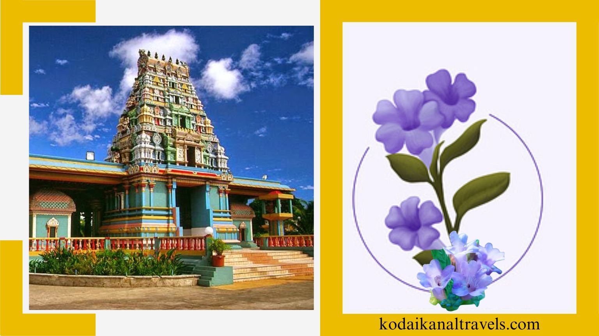
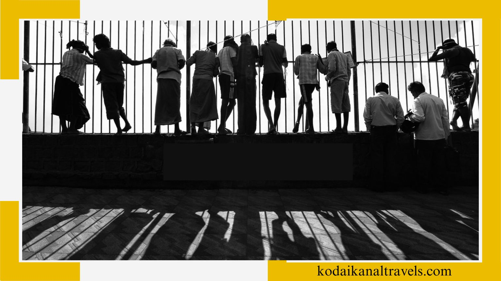
SUICIDE POINT
The Green Valley View, also called Suicide Point, offers a stunning view of the Kodainakal plains, deep valleys, and hills. The enchanting views of the Vaigai Dam can also be seen from here and leave travelers in awe. The place got its name as a suicide point since the valley is quite dangerous, dense, and deep, with more than 5000 feet of drop. Situated at a distance of 5.5 km from the Kodaikanal Lake, this point is one of the most famous Kodaikanal places to visit, not only because it offers gorgeous views but also because it is surrounded by plenty of shops selling homemade chocolates, ornaments, and a wide range of flowers.
COAKERS WALK
Coakers Walk is among the most beautiful Kodaikanal tourist places and is essentially a man-made 1 km-long walking plaza that is set in the mountains of Tamil Nadu. The lovely path of Coakers Walk curves beautifully at the edge of the gorgeous mountain and has been built mainly for visitors to catch a glimpse of paradise on earth. It is the perfect place to get a morning and evening walk amidst the goodness of nature, with such mesmerizing views to greet you of the lush valleys and hills of Kodaikanal. In fact, taking a leisurely walk on this platform is among the most relaxing things to do in Kodaikanal.
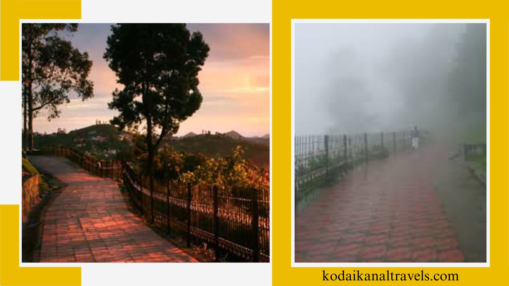
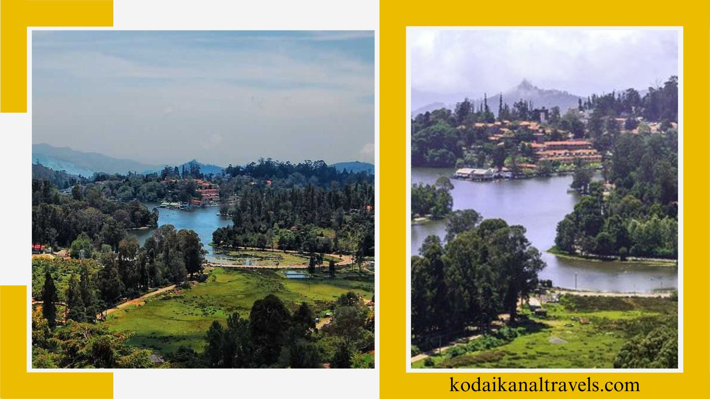
MOIR POINT
Tucked at the entrance of a serene jungle that leads all the way up to the exquisite Berijam Lake, Moir Point is among the most prominent viewpoints in Kodaikanal that you just can’t miss. Named after Sir Thomas Moir, who had constructed the Goschen Road in 1929 CE, this monument stands to commemorate his contributions and his efforts in building the Goschen Road, which actually starts from this point on the road joining the Kodaikanal-Berijam Lake. Other than being an important historical landmark, this place also offers stunning views of the lush green valleys and hills of Tamil Nadu, bringing a huge crowd of tourists here every month.
SILVER CASCADE FALLS
Welcome to another of the great places to see in Kodaikanal, which is a picturesque natural area located in a lush landscape. As a result of Kodai Lake, the waterfalls fall from a height of 180 feet. Get a refreshing break, enjoy the views of the frothy water, or take a fresh bath, which has some medicinal value. If you like Instagram, then you are going to love capturing pictures at this place. And if you want to visit the waterfalls near Kodaikanal during the rainy season, then expect a heavy flow of water.
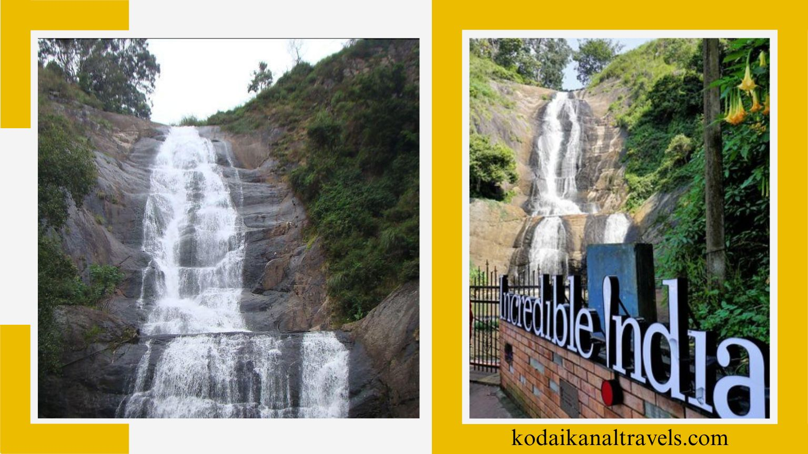
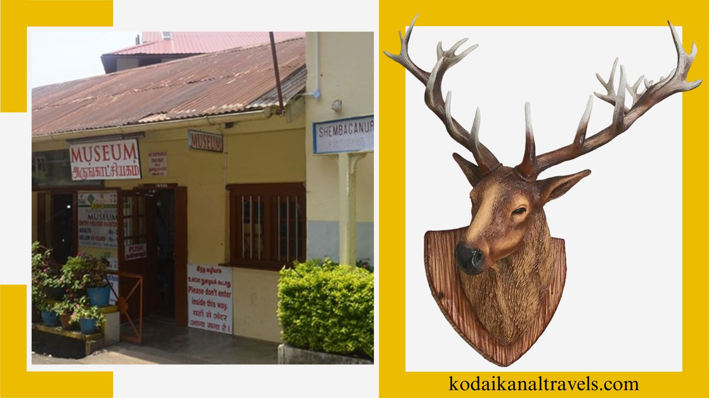
SHEMBAGANUR MUSEUM OF NATURAL HISTORY
If you miss out on a museum tour to Kodaikanal, then you have surely missed a peaceful time. One of the most unique places to visit in Kodaikanal is the Shembaganur Museum of Natural History. It is obviously a lesser-known place that has won the hearts of historians and travelers alike with its 123-year-old collections. With an unbelievable collection of 500 animals (taxidermy), an orchidarium of 300 species, and specimens of wildlife creatures like snakes, butterflies, and moths. Another great collection are the remnants of the Paliyar tribes, the former nomadic people living in lower Kodaikanal.
CHETTIAR PARK
Kodaikanal in the summer is a gratifying experience rather than challenging when you are visiting attractions like Chettiar Park. A very small park that has a soothing vibe and pleasant surroundings will let you enjoy a sustainable picnic when you spend some time with your family or loved ones. You will be impressed with the amazing flora, in particular the Kurinji Flowers, which bloom every 12 years. An awesome Kodaikanal sightseeing attraction, it has been featured as a major shoot location in many feature films.
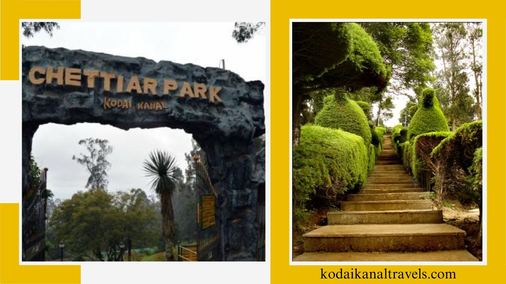
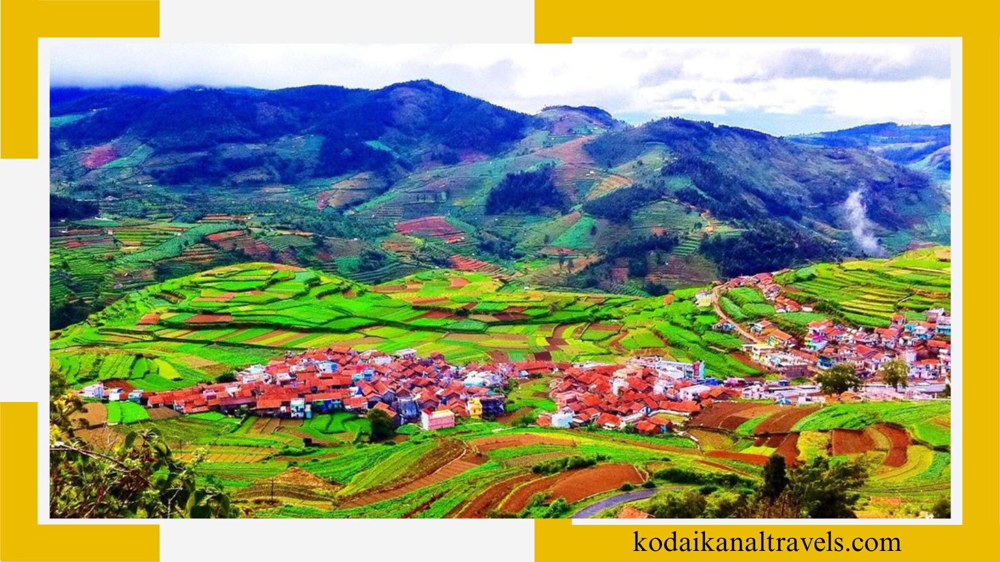
POOMBARAI VIEWING POINT
Poombarai is a scenic village located about 18 km from Kodaikanal. The inspiring hike and breathtaking views of the valley make it one of the top Kodaikanal tourist places. Nestled between the terraced hills, the village is very popular for garlic farming. The combination of tranquil mountains and that breadth of fresh air with a view of the tiny, colorful houses would be like a dream come true for you. Eat the local food in an open-air restaurant to give you a memory of a lifetime.
VATTAKANAL FALLS
Right in the middle of a peaceful forest, Vattakanal Falls is among the most amazing places to see in Kodaikanal. During monsoon season, the waterfall is in full swing, making it look grand and gorgeous. Vattakanal Falls is one of those waterfalls in Kodaikanal that are absolutely safe to be around, but it's still suggested that you wear footwear that isn’t slippery.

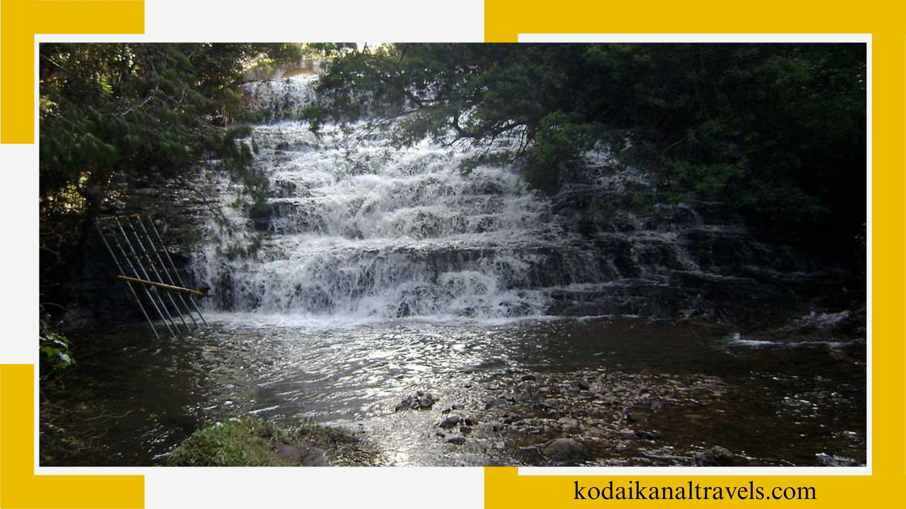
PAMBAR FALLS
Pambar Falls is one of the most magnificent waterfalls in the entire hill station. The town’s reservoir overflows, creating a waterfall called “Fairy Falls," which then continues to join the Vaigai River, creating the Pambar Falls. Down below, there’s a pond-like formation where you can bathe in the cool and pristine water of the waterfall. The green and wild surroundings make this place absolutely picture-perfect.
BEAR SHOLA FALLS
Situated just 2 km away from Kodaikanal Lake, Bear Shola Falls is among the most popular Kodaikanal places to visit. Cascading down from a considerable height, this seasonal waterfall comes to life to the fullest during the rainy season when the water gushes down the mountain, making its way through verdant greenery and making a frothy base at the bottom. It is believed that this used to be the favorite place of a bear for drinking water, and that gave it its unusual name. However, now this quiet and peaceful waterfall is among the most favorite places to visit in Kodaikanal for nature lovers, couples, and adventure seekers.
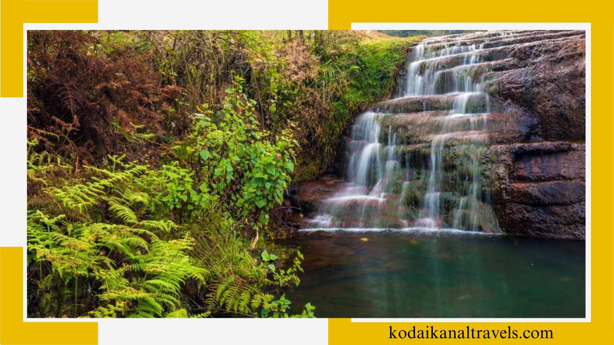
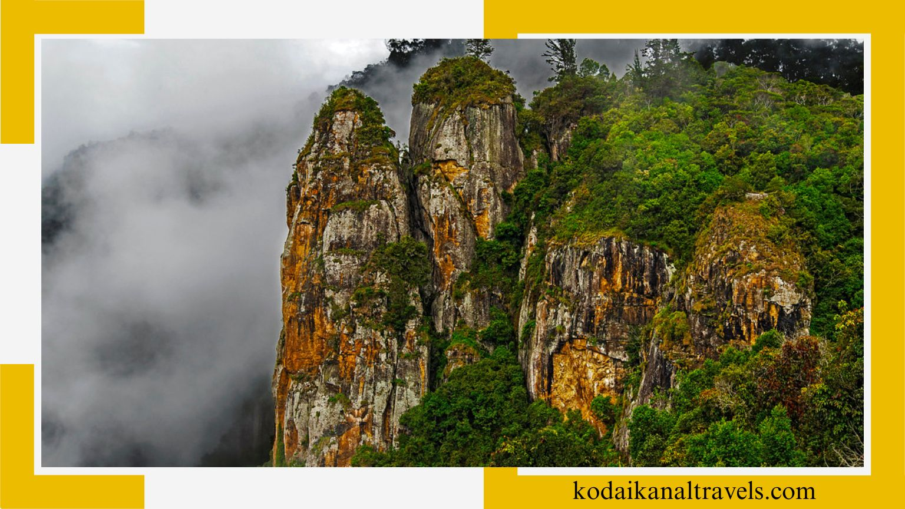
PILLAR ROCKS
The Pillar Rocks in Kodaikanal are 400 meter long boulders naturally positioned in a particular order that has become a lovely picnic spot for families with kids and couples. Also constituting a beautiful mini garden, this place has is said to have a rich aura of affection which makes them visiting them one of the most wonderful and romantic things to do in Kodaikanal. The breathtaking view of the surrounding hills and villages from these rocks is not something you’d like to miss when you’re here. Don’t forget to get yourself a plate of potato and onion bhaji from outside the mini garden.
THALAIYAR FALLS
Thalaiyar Falls is one of the most beautiful waterfalls in Kodaikanal, and it is located on the lush green slopes of the Palani Hill ranges in the Dindigul District. The locals call it Rat Tail Falls because of its unique appearance. Cascading from a height of over 290 meters, this one is the highest waterfall in Tamil Nadu, as well as the sixth highest waterfall in India and the 267th highest in the world. There is a view tower located right in this park at Dum Dum Rock to help photographers click awesome pictures of this awesome Kodaikanal tourist place as well as the Manjalar Dam.
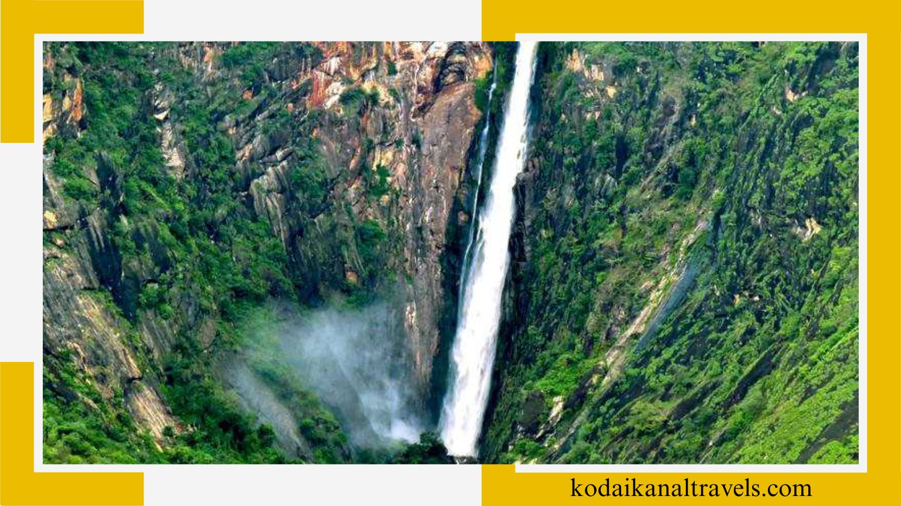
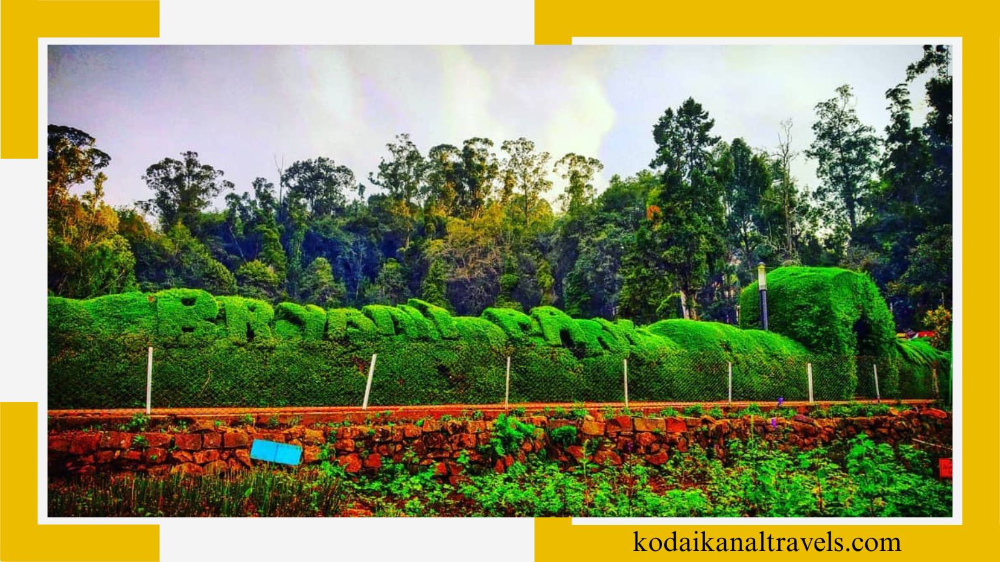
BRYANT PARK
Bryant Park is what adds to the charm and elegance of the city of Kodaikanal in Tamil Nadu. Located on the eastern side of Kodai Lake, this beautiful park is bejeweled with a diverse range of plant and shrub species that lures in a huge influx of nature lovers and botany enthusiasts into the park every month. You’ll find everything from flowering plants and hybrids to grafts in this park. And as it is located right after Coakers Walk, you can enjoy two scintillating activities while visiting this park: a leisurely stroll as well as a rendezvous with nature’s beautiful creations!
PINE FOREST
The Pine Forest of Kodaikanal is probably its most scenic and tranquil attractions that would make you feel you’ve just entered your favorite fairytale! Located in southwest Kodaikanal, Pine Forest is among the most popular Kodaikanal places to visit courtesy its matchless beauty. It is home to the most serene and rare forms of nature that have been preserved to date with strict supervision on the part of the Tamil Nadu government. It also happens to be an essential heritage site in the town that came into existence owing to the tireless efforts of Mr. Bryant who had put the pine plantations in the first place in the year 1906. Offering activities like horse riding, nature walks, hiking, trekking, and camping, it’s the most favorite spot of nature lovers, adventure seekers, and photographers.
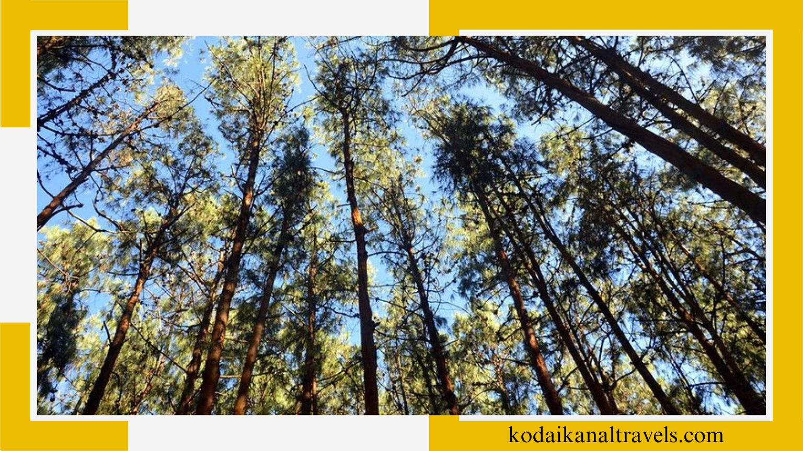
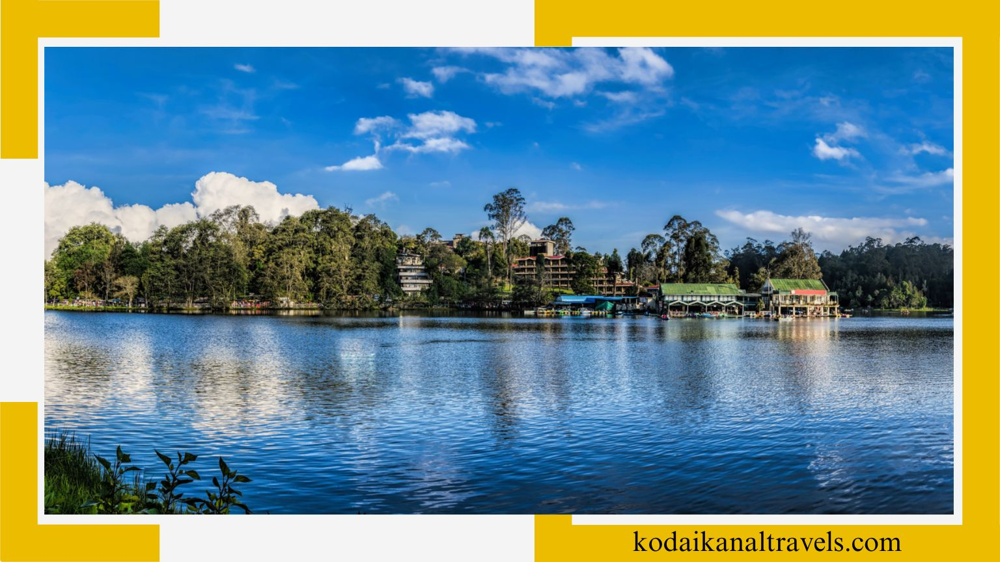
KODAIKANAL LAKE
On a fine day when clouds hover above Kodaikanal and a cool breeze flows through the forests, visit Kodaikanal Lake. Covering an expanse of 60 acres, this man-made, star-shaped lake has been welcoming countless tourists since 1863. Created by Sir Vere Henry Levinge, the then Collector of Madurai, the lake is fed by the waters that come from Palani Hills. The lake’s outflow creates a breathtaking waterfall, which is called “Silver Cascade.”. At a height of 180 feet, the cascade is also one of the most popular places to visit in Kodaikanal.